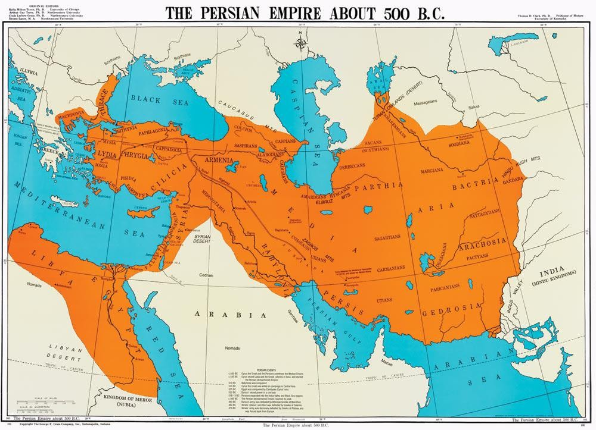

PRC NEWS
Discovery of Achaemenid inscriptions in Russia
A team of Russian archaeologists managed to discover valuable remains from the Achaemenid Empire in their new excavations in the Phanagoria ancient area in Temryuk district, south of Krasnodar. According to the spokesperson of the Volnoye Delo Foundation, in this excavation, the remains of a tablet made of marble and an inscription of Darius the Great (Darius I, the third king of the Achaemenid dynasty) were found. In this regard, Oleg Deripaska, one of the members of the aforementioned research foundation, stated: This discovery is of global importance and is considered very valuable. The text of the above inscription indicates that someone in this area created this inscription and works under the command of Darius the Great. The text of the inscription engraved on the body of this tablet is in ancient Persian cuneiform and belongs to the first half of the fifth century BC. The remains of military fortifications and the walls of an ancient fortress were also found in this area, which shows the value and importance of this ancient site. In this text, there is a cuneiform word that has not been discovered before, and experts believe that this word refers to the region and the big city of Miletus in Ionia in Asia Minor. Researchers believe that Darius issued the order to write this inscription after the victory over the Greek forces in Asia Minor. Currently, this inscription is being carefully and scientifically studied and its restoration and maintenance operations are being carried out at the Phanagoria Cultural Research Center.
The vastness of the land of Iran
The land of the Achaemenians, which was assumed in the old days:

The hypothetical Achaemenid land at present:
According to these new inscriptions found in Russia, the size of the land of Iran during the Achaemenid era was larger than what we assumed in the past, and currently the hypothetical map of Iran during the Achaemenid era is as shown in the photo above.
VISIT OUR PAGE IN INSTAGRAMWritten by: THE_PRCS